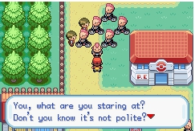
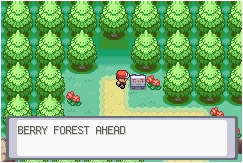
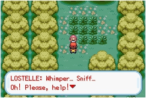
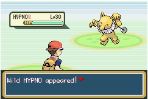
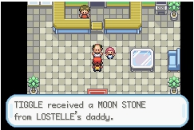

บทที่ 25 / 29
เกาะลับ3<Three Island>
❖
ขึ้นไปทางเหนือ จะพบกลุ่มแก๊งค์มอเตอร์ไซด์ขวางทางไว้อยู่ แล้วจะมีคนในกลุ่มมาคุย ให้เราตอบตกลง แล้วสู้ 4คนรวด พอสู้ชนะแล้วให้คุยกับคน2คน จะได้Full Restore เป็นของตอบแทน

เสร็จแล้วให้ขึ้นไปด้านบน แล้วเดินไปทางตะวันตก แล้วเข้าป่า<Berry Forest> เข้าไปสุดทางจะเจอLostelleให้เราคุยแล้วสู้กับ สลีปเปอร์<Hypno> เลเวล30 เมื่อชนะเราจะได้รับ Iapapa Berry




เราจะนำผู้หญิงกลับมาที่เกาะ2 ให้เราคุยกับพ่อ แล้วเราจะได้ Moon Stone มา แล้วให้เราเข้าโปเกมอนเซ็นเตอร์ของเกาะ1 เดินไปทางขวา จะมีเหตุการณ์ขึ้น แล้วนำเรากลับมา ให้เราไปยังโทคิวะซิตี้ (เราสามารถไปเกาะนี้ได้อีกโดยใช้ท่าเรือคุจิบะ ในคุจิบะซิตี้)